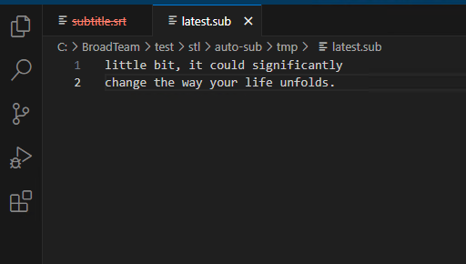

stl version v3.8.0.0
Date: 2024.07.24
Issues in Milestone
---
- [13] #autosub Make new recording mode only last transcription
Features
---
#autosub Make new recording mode only last transcription
Changed ApplicationSettings.json file. Added settings `subtitle_latest_path`:
subtitle_write_mode - Choose what to do with the received transcriptions
0: Send via TCP or UDP as Newfor
1: Write to file as SRT
2: Write to file as plain text the latest subtitle
subtitle_srt_path - if subtitle_write_mode is 1, this is the path to the SRT file
subtitle_latest_path - if subtitle_write_mode is 2, this is the path to write receved subtitle
If `subtitle_write_mode = 2` we write the received transcriptions to the file specified in `subtitle_latest_path`. We write only latest generated subtitle every time.
